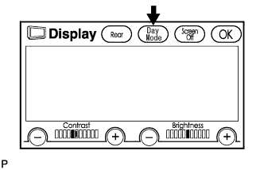
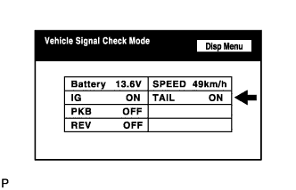

NAVIGATION SYSTEM > Display does not Dim when Light Control Switch is Turned ON |
| 1.CHECK IMAGE QUALITY SETTING |
 |
Enter the display adjustment screen by pressing the "DISPLAY" switch.
Turn the light control switch to the TAIL position.
Check if "Day Mode" on the display is ON.
|
| ||||
| OK | ||
| ||
| 2.CHECK VEHICLE SIGNAL (DISPLAY VEHICLE SIGNAL) |
 |
Enter the "Display Check" mode (Vehicle Signal Check) (Click here).
Cover the automatic light control sensor on the instrument panel with a cloth.
Set the instrument panel light control to less than maximum (to activate the dimmer function that works when the light control switch is in the TAIL position).
Check that the display changes between DIM and BRIGHT according to the light control switch operation.
| Light Control Switch | Display |
| TAIL or HEAD | DIM |
| OFF | BRIGHT |
|
| ||||
| OK | ||
| ||